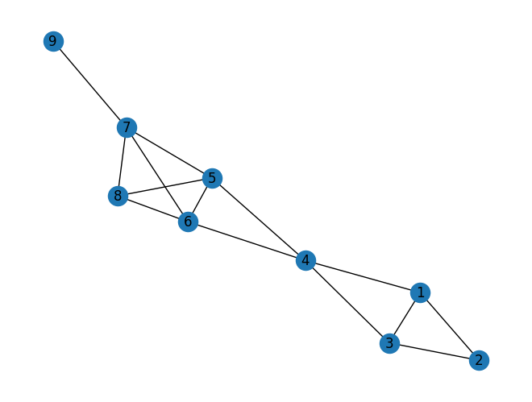

Tugas Pagerank#
Buat graph berarah dengan NetworkX (minimal 9 node )
Hitung manual pagerank dari graph yang anda buat
Hitung pagerank menggunakan NetworkX
Implementasikan ulang Shakunni/Extractive-Text-Summarization
Jelaskan prosesnya
Upload di github repository webstatis masing masing
Perhitungan Pagerank (Manual dan NetworkX)#
Pembuatan Graph minimal 9 nodes#
import pandas as pd
import networkx as nx
import matplotlib.pyplot as plt
G = nx.Graph()
G.add_edges_from([(1,2),(1,3),(1,4),(2,3),(3,4),(4,5),(4,6),(5,6),(5,7),(5,8),(6,7),(6,8),(7,8),(7,9)])
nx.draw(G, with_labels=True)
plt.show()

Perhitungan Pagerank Secara Manual#
d = 0.85 # Damping factor
max_iter = 100 # iterasi maksimum
tolerance = 1.0e-6 # Toleransi konvergensi
N = len(G.nodes())
pagerank = dict.fromkeys(G.nodes(), 1.0/N)
for i in range(max_iter):
diff = 0
for node in G.nodes():
rank = 1 - d
for neighbor in G.neighbors(node):
rank += d * pagerank[neighbor] / G.degree(neighbor)
diff += abs(pagerank[node] - rank)
pagerank[node] = rank
if diff < N * tolerance:
break
print("Manual pagerank:\n", pagerank)
Manual pagerank:
{1: 0.9976409644640096, 2: 0.7153297101921915, 3: 0.9976414752804466, 4: 1.2280550499924572, 5: 1.2064128853233231, 6: 1.2064130819512038, 7: 1.2882511897618658, 8: 0.9364788958702334, 9: 0.4237533778243965}
Perhitungan Pagerank dengan NetworkX#
pg = nx.pagerank(G, alpha=0.85)
print("Networkx pagerank:\n", pg)
Networkx pagerank:
{1: 0.11085242532970185, 2: 0.07948362274014723, 3: 0.11085242532970185, 4: 0.13645209029225677, 5: 0.13404444415308828, 6: 0.13404444415308828, 7: 0.14313616991007672, 8: 0.10405142282202429, 9: 0.04708295526991471}
Implementasi Text Summarization pada Python#
Import Modul#
!pip install PyPDF2
!pip install docx2txt
Looking in indexes: https://pypi.org/simple, https://us-python.pkg.dev/colab-wheels/public/simple/
Collecting PyPDF2
Downloading pypdf2-3.0.1-py3-none-any.whl (232 kB)
?25l ━━━━━━━━━━━━━━━━━━━━━━━━━━━━━━━━━━━━━━━━ 0.0/232.6 kB ? eta -:--:--
━━━━━━━━━━━━━━━━━━━━━━━━━━━━━━━━━━━━━━ 232.6/232.6 kB 15.2 MB/s eta 0:00:00
?25hRequirement already satisfied: typing_extensions>=3.10.0.0 in /usr/local/lib/python3.9/dist-packages (from PyPDF2) (4.5.0)
Installing collected packages: PyPDF2
Successfully installed PyPDF2-3.0.1
Looking in indexes: https://pypi.org/simple, https://us-python.pkg.dev/colab-wheels/public/simple/
Collecting docx2txt
Downloading docx2txt-0.8.tar.gz (2.8 kB)
Preparing metadata (setup.py) ... ?25l?25hdone
Building wheels for collected packages: docx2txt
Building wheel for docx2txt (setup.py) ... ?25l?25hdone
Created wheel for docx2txt: filename=docx2txt-0.8-py3-none-any.whl size=3977 sha256=b3102c6f88d27c96c1b619ad32ba19e8f461a5d46f19c82fec8d8365d1212f21
Stored in directory: /root/.cache/pip/wheels/40/75/01/e6c444034338bde9c7947d3467807f889123465c2371e77418
Successfully built docx2txt
Installing collected packages: docx2txt
Successfully installed docx2txt-0.8
import numpy as np
import PyPDF2
import docx2txt
import sys
from nltk.tokenize.punkt import PunktSentenceTokenizer
from sklearn.feature_extraction.text import TfidfTransformer, CountVectorizer
Fungsi untuk Membaca Dokumen#
def readDoc(name):
# now read the type of document
if name.lower().endswith('.txt'):
choice = 1
elif name.lower().endswith('.pdf'):
choice = 2
else:
choice = 3
# print(name)
# print(choice)
# Case 1: if it is a .txt file
if choice == 1:
f = open(name, 'r', encoding="utf8")
document = f.read()
f.close()
# Case 2: if it is a .pdf file
elif choice == 2:
pdfFileObj = open(name, 'rb', encoding="utf8")
pdfReader = PyPDF2.PdfFileReader(pdfFileObj)
pageObj = pdfReader.getPage(0)
document = pageObj.extractText()
pdfFileObj.close()
# Case 3: none of the format
else:
print('Failed to load a valid file')
print('Returning an empty string')
document = ''
# print(type(document))
return document
Fungsi untuk Melakukan Tokenisasi kepada Dokumen#
def tokenize(document):
# Tokenisasi menggunakan PunktSentenceTokenizer
# Kita panggil semua instance sebagai sentence_tokenizer
doc_tokenizer = PunktSentenceTokenizer()
# tokenize() method: Mengambil dokumen sebagai input dan mengembalikan list semua kalimat didalam dokumen.
# Sentences adalah sebuah list yang mengandung setiap kalimat dari dokumen
sentences_list = doc_tokenizer.tokenize(document)
return sentences_list
Pembacaan Dokumen#
from google.colab import drive
drive.mount('/content/drive')
KeyboardInterruptTraceback (most recent call last)
<ipython-input-10-d5df0069828e> in <cell line: 2>()
1 from google.colab import drive
----> 2 drive.mount('/content/drive')
/usr/local/lib/python3.9/dist-packages/google/colab/drive.py in mount(mountpoint, force_remount, timeout_ms, readonly)
101 def mount(mountpoint, force_remount=False, timeout_ms=120000, readonly=False):
102 """Mount your Google Drive at the specified mountpoint path."""
--> 103 return _mount(
104 mountpoint,
105 force_remount=force_remount,
/usr/local/lib/python3.9/dist-packages/google/colab/drive.py in _mount(mountpoint, force_remount, timeout_ms, ephemeral, readonly)
130 )
131 if ephemeral:
--> 132 _message.blocking_request(
133 'request_auth', request={'authType': 'dfs_ephemeral'}, timeout_sec=None
134 )
/usr/local/lib/python3.9/dist-packages/google/colab/_message.py in blocking_request(request_type, request, timeout_sec, parent)
174 request_type, request, parent=parent, expect_reply=True
175 )
--> 176 return read_reply_from_input(request_id, timeout_sec)
/usr/local/lib/python3.9/dist-packages/google/colab/_message.py in read_reply_from_input(message_id, timeout_sec)
94 reply = _read_next_input_message()
95 if reply == _NOT_READY or not isinstance(reply, dict):
---> 96 time.sleep(0.025)
97 continue
98 if (
KeyboardInterrupt:
document = readDoc('/content/drive/MyDrive/prosainsdata/teks.txt')
print('The length of the file is:', end=' ')
print(len(document))
The length of the file is: 537
Generate List untuk Setiap Kata pada Dokumen#
sentences_list = tokenize(document)
# Menampilkan jumlah memori yang digunakan untuk list
print('Ukuran list dalam bytes: {}'.format(sys.getsizeof(sentences_list)))
# Menampilkan ukuran satu list
print('Ukuran satu list dalam bytes: {}'.format(sys.getsizeof(sentences_list[0])))
Ukuran list dalam bytes: 112
Ukuran satu list dalam bytes: 88
Print Tipe Data dan Analisis Elemen dalam Kalimat#
print(type(sentences_list))
print('Ukuran list "sentences": {}'.format(len(sentences_list)))
<class 'list'>
Ukuran list "sentences": 7
Print Elemen dalam List#
for i in sentences_list:
print(i)
Hari ini adalah hari Minggu yang cerah.
Langit biru terbentang luas di atas kepala, memantulkan cahaya matahari yang hangat.
Di sekitar saya, pepohonan hijau bergoyang-goyang karena angin yang sepoi-sepoi.
Saya merasa rileks dan tenang di tengah alam yang indah ini.
Saya mengambil napas dalam-dalam dan merasakan udara segar memasuki paru-paru saya.
Sejenak saya merenungkan betapa beruntungnya saya bisa menikmati keindahan alam ini.
Saya berharap setiap orang juga bisa merasakan ketenangan dan kebahagiaan yang saya rasakan saat ini.
Generate term-document matrix (TD matrix) dari data#
cv = CountVectorizer()
cv_matrix = cv.fit_transform(sentences_list)
normal_matrix = TfidfTransformer().fit_transform(cv_matrix)
print(normal_matrix.toarray())
[[0.36106342 0. 0. 0. 0. 0.
0. 0. 0. 0. 0. 0.36106342
0. 0. 0. 0. 0. 0.72212684
0. 0. 0.22242207 0. 0. 0.
0. 0. 0. 0. 0. 0.
0. 0. 0. 0. 0. 0.
0. 0.36106342 0. 0. 0. 0.
0. 0. 0. 0. 0. 0.
0. 0. 0. 0. 0. 0.
0. 0.19483551]
[0. 0. 0. 0.30436616 0. 0.
0. 0. 0.30436616 0. 0.30436616 0.
0. 0. 0.21595689 0. 0.30436616 0.
0. 0. 0. 0. 0. 0.
0. 0.30436616 0. 0.30436616 0.30436616 0.30436616
0.30436616 0. 0. 0. 0. 0.
0. 0. 0. 0. 0. 0.
0. 0. 0. 0. 0. 0.
0. 0. 0. 0. 0. 0.30436616
0. 0.16424078]
[0. 0. 0.28764859 0. 0.28764859 0.
0. 0. 0. 0. 0. 0.
0. 0. 0.20409527 0.28764859 0. 0.
0.28764859 0. 0. 0. 0.28764859 0.
0. 0. 0. 0. 0. 0.
0. 0. 0. 0. 0. 0.
0. 0. 0. 0. 0. 0.28764859
0. 0. 0. 0.15521971 0. 0.
0.28764859 0.57529717 0. 0. 0. 0.
0. 0.15521971]
[0. 0.29996612 0. 0. 0. 0.
0. 0. 0. 0. 0. 0.
0. 0.25640109 0.25640109 0. 0. 0.
0. 0.36136757 0.22260944 0. 0. 0.
0. 0. 0. 0. 0. 0.
0. 0. 0. 0. 0.36136757 0.
0. 0. 0. 0. 0. 0.
0. 0.36136757 0. 0.19499964 0. 0.
0. 0. 0. 0.36136757 0.36136757 0.
0. 0.19499964]
[0. 0. 0. 0. 0. 0.
0. 0. 0. 0. 0. 0.
0.51035662 0.18105664 0. 0. 0. 0.
0. 0. 0. 0. 0. 0.
0. 0. 0. 0. 0. 0.
0. 0.25517831 0.25517831 0. 0. 0.21181991
0. 0. 0.25517831 0. 0.51035662 0.
0. 0. 0. 0.27539648 0.25517831 0.
0. 0. 0. 0. 0. 0.
0.25517831 0. ]
[0. 0.27789739 0. 0. 0. 0.
0.3347815 0.3347815 0. 0.27789739 0. 0.
0. 0. 0. 0. 0. 0.
0. 0. 0.2062319 0. 0. 0.
0.3347815 0. 0. 0. 0. 0.
0. 0. 0. 0.3347815 0. 0.
0.3347815 0. 0. 0. 0. 0.
0. 0. 0. 0.36130675 0. 0.3347815
0. 0. 0. 0. 0. 0.
0. 0. ]
[0. 0. 0. 0. 0. 0.29214146
0. 0. 0. 0.2425025 0. 0.
0. 0.2072831 0. 0. 0. 0.
0. 0. 0.17996481 0.29214146 0. 0.29214146
0. 0. 0.29214146 0. 0. 0.
0. 0. 0. 0. 0. 0.2425025
0. 0. 0. 0.29214146 0. 0.
0.29214146 0. 0.29214146 0.31528828 0. 0.
0. 0. 0.29214146 0. 0. 0.
0. 0.15764414]]
print(normal_matrix.T.toarray)
res_graph = normal_matrix * normal_matrix.T
<bound method _cs_matrix.toarray of <56x7 sparse matrix of type '<class 'numpy.float64'>'
with 74 stored elements in Compressed Sparse Column format>>
Menentukan Rank untuk Setiap Kalimat Menggunakan textrank#
nx_graph = nx.from_scipy_sparse_array(res_graph)
ranks = nx.pagerank(nx_graph)
# Analisis tipe data dari rank
print(type(ranks))
print('The size used by the dictionary in Bytes is: {}'.format(sys.getsizeof(ranks)))
# print ranks
for i in ranks:
print(i, ranks[i])
<class 'dict'>
The size used by the dictionary in Bytes is: 360
0 0.12984337376203686
1 0.12928511702434828
2 0.13625728328644748
3 0.16210097158456632
4 0.1350656004991037
5 0.14849035774607258
6 0.15895729609742507
Menemukan Kalimat Penting dan Menentukan Kesimpulan#
sentence_array = sorted(((ranks[i], s) for i, s in enumerate(sentences_list)), reverse=True)
sentence_array = np.asarray(sentence_array)
rank_max = float(sentence_array[0][0])
rank_min = float(sentence_array[len(sentence_array) - 1][0])
temp_array = []
# Jika semua kalimat memiliki rank yang sama. Maka kalimat tersebut dianggap sama
# Mengambil kalimat manapun tidak ada masalah
flag = 0
if rank_max - rank_min == 0:
temp_array.append(0)
flag = 1
# Jika kalimat memiliki rank yang berbeda
if flag != 1:
for i in range(0, len(sentence_array)):
temp_array.append((float(sentence_array[i][0]) - rank_min) / (rank_max - rank_min))
threshold = (sum(temp_array) / len(temp_array)) + 0.2
sentence_list = []
if len(temp_array) > 1:
for i in range(0, len(temp_array)):
if temp_array[i] > threshold:
sentence_list.append(sentence_array[i][1])
else:
sentence_list.append(sentence_array[0][1])
Menjadikan Kesimpulan ke dalam File Baru#
summary = " ".join(str(x) for x in sentence_list)
print(summary)
f = open('final.txt', 'a+')
f.write('\n')
f.write(summary)
f.close
Saya merasa rileks dan tenang di tengah alam yang indah ini. Saya berharap setiap orang juga bisa merasakan ketenangan dan kebahagiaan yang saya rasakan saat ini.
<function TextIOWrapper.close()>
for i in sentence_list:
print(i)
Saya merasa rileks dan tenang di tengah alam yang indah ini.
Saya berharap setiap orang juga bisa merasakan ketenangan dan kebahagiaan yang saya rasakan saat ini.